来源：https://rupmba5s9d.feishu.cn/docx/CIiMdBlfjohvsRxcTClcCgSSnae
大家好，我是苏木，分享一下最近 1 年在小红书赚钱的经历。
这个项目初期是无货源模式，我跑了 1 年，销售 50 多不到 60 万，利润有 30 万左右。后期可以通过一些方法建立自己的护城河，我觉得适合大部分普通人做，一年不一定能年入百万，毕竟我也没有赚到，但10～20 万应该问题不大。
这次分享有两个目的，一是想多交一些同频的朋友一起研究如何放大，一个人创业太孤独了，有时候挺苦闷的；二是想找找有没有更多合适的供应商朋友，我可以帮你多卖一些货（这方面文末我再说）。
受徐宿老师鼓励，第一次来生财分享和寻求合作，希望对大家有帮助，先贴一下成绩：
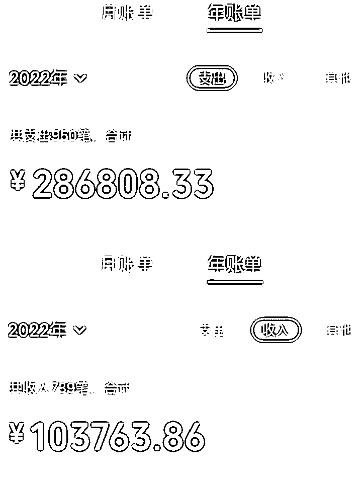
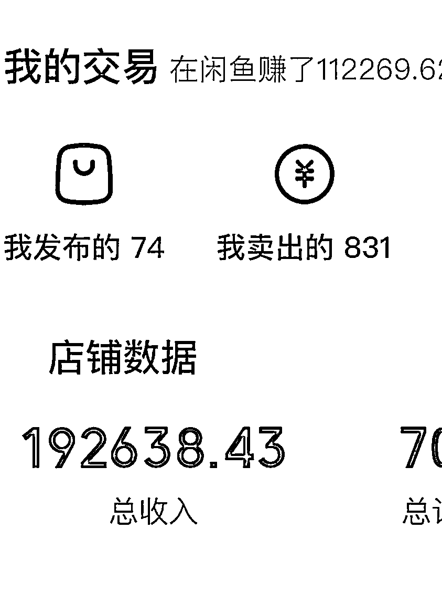
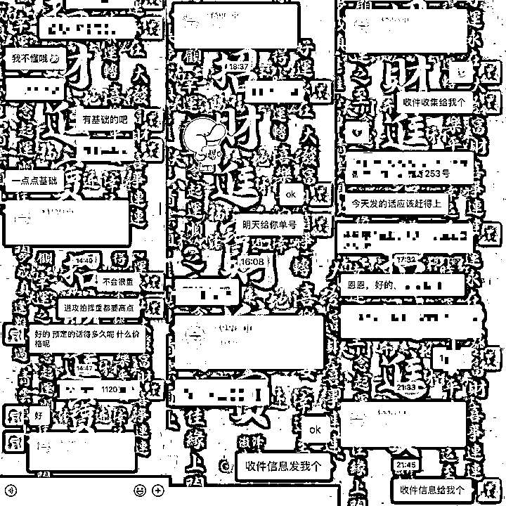
然后下面开始正式分享：
我叫苏木，90 后，简单介绍下自己的经历。
15年在深圳创业，有幸陪跑一家三年从0做到年入20亿的集团，全程参与，从一个3个人的小团队发展成500多人的公司。当然，只是集团有那么多人，我直接管理的也才30几号人。
后面因为集团太安逸了，选择和同事出来创业，结果血亏三年，把之前集团赚的 200 多万全部亏完，到第三年甚至都开始怀疑自己，是不是能力不行，为啥自己离了集团过的这么惨。
正逢过年，所幸就回老家了，准备好好反思一下是什么问题。
一个月后，结合之前的经验和自己想做的事，给自己定规矩，要符合三个条件才做：
可能是吃了个亏，心态比较稳了，借用大熊说过的一句话“慢慢来，比较快”。
在没有进生财之前，徐宿老师给我分享了知乎好物项目，当时是跟着他学习写自己喜欢的运动类好物，三天就出单了，但是因为品类问题，并不能变现很多，一个月只有 2000 多（比起当时很多月日五万十万的确实不够看，但我还挺开心的）。
做了三个月后，我的账号能在知乎行业排名排进前10，好物收益却有一个月2000-3000：
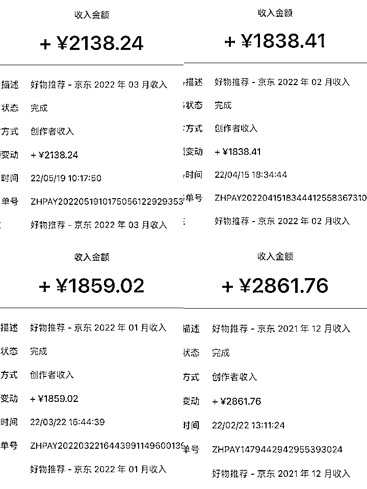
虽然每个月多赚2000～3000 确实不错了，但是我其实不太满足，而且深度研究以后，我发现我在知乎选这个赛道确实赚不多钱了，天花板有限。
意识到是知乎赛道天花板有限，我决定花一个星期找其他渠道继续跑我熟悉的运动产品品类，最终选定小红书渠道去试试看。
我花了两天把小红书相关类目的爆文和关键词整理了一份详细的脑图，由于目前所在的赛道还在长期赚钱，不方便分享，但是我等会儿可以给大家分享一下我判断这个赛道能不能做的方法。
接着说我刚进小红书以后，注册账号搜集数据看了一周，然后第二周开始发第一条小红书。
发了当天下午都没敢看数据，等到晚上看了一眼，清楚的记得当时的数据是：点赞31个，收藏18个，评论6条。
看到这个数据之后就觉得，这条路成了，虽然我还不知道怎么变现，但是，可以肯定的是小红书大有可为。
果然，发第四条笔记就直接爆了，当天就上8000赞，最终数据停留在1.7万赞，但是因为当时还不知道怎么变现，就只能先引流到微信。
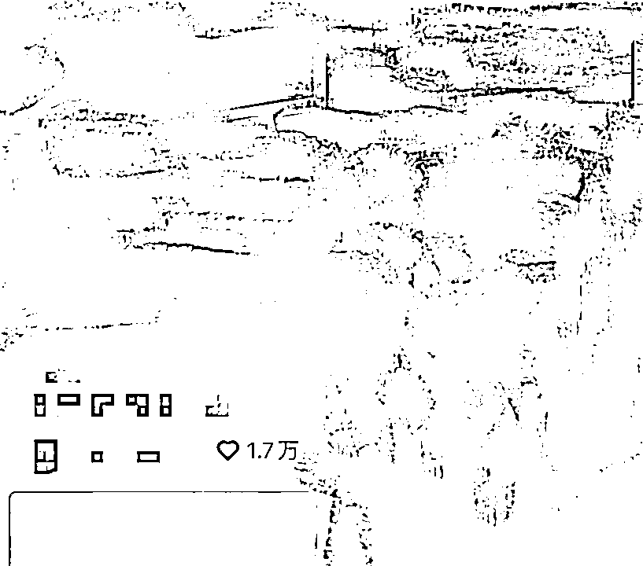
然后，我开始尝试去引导这些咨询我的人消费，当时小红书的主要收入分两块：
1、红包：别人给我发红包咨询专业的购买意见
2、CPS带货：淘宝客的模式，有人来问我某个东西怎么买我直接推荐他CPS链接
第二点一开始其实没想到，因为在此之前我都不知道什么是CPS，但是由于来我咨询我购买建议的人太多，解答后，很多人都懒得去找相关的渠道，问我有没有链接推荐，我就去京东联盟和淘宝联盟生成转链给这些人，间接产生收益。
事实证明人真的太懒了，一旦获得别人的信任，你从中赚钱的机会太多了。
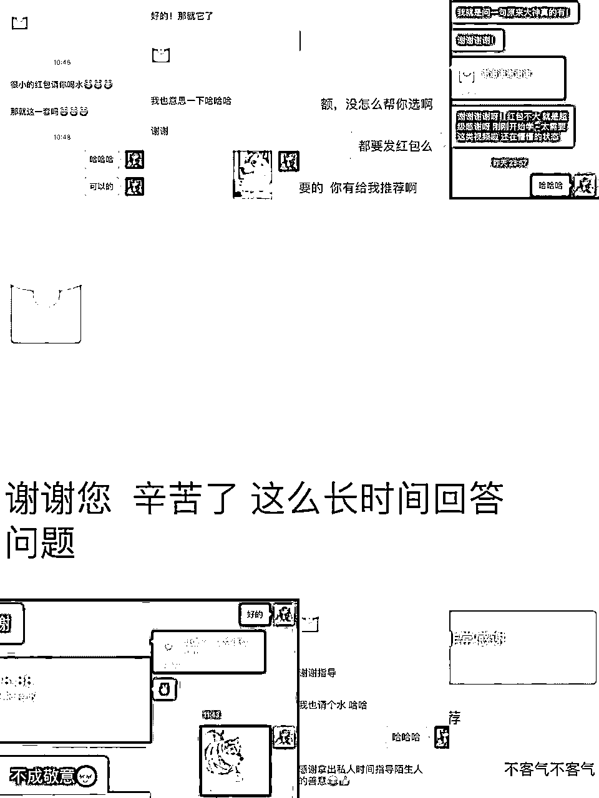
关于红包变现，微信上客户咨询问题，我解答，收点红包这样子变现。就这样也可以一个月变现个小一千，第一次感受到小红书的粉丝付费意愿很强。
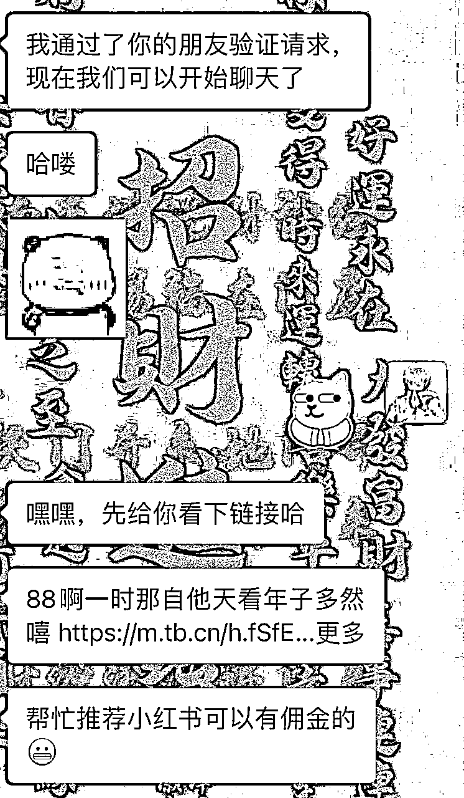
等我的小红书笔记涨到 500 粉丝后，就有淘宝商家主动找上来谈合作，聊了几家之后发现， 我开始不满足于给别人打广告，我感觉这件事真的可以长期做下去，只要挖到供应链降低成本，这个生意符合我在这篇文章定的所有条件。
并且，随着你做的时间越久，累积越多，能赚到的利润就更多。
了解到这一点之后，当天晚上兴奋了一夜，我知道，我找到长期变现模式了，接下来，是我表演的时候了。
还记得我文章开头说的那3 点么，只要符合那 3 点就算是一个好生意，值得长期投入做：
我发现我选择的这个赛道的产品，来咨询的粉丝都是可以精准沉淀到我的微信号上，并且由于我输出的内容和长时间给他们解答问题，信任基础很强，买东西直接转账的也不在少数。
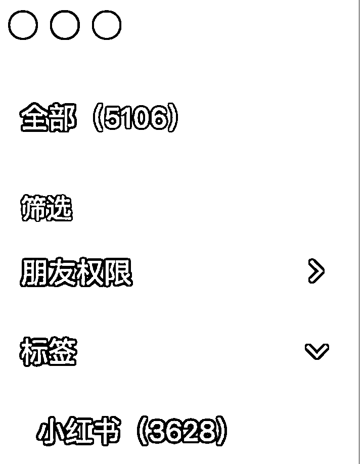
一年来我微信上加的人，小红书占70%，并且是因为前面加的人太多，消息回复不过来，后面只加成交过的客户才能忙得过来。
时间应该给为你买单的人，而不是白嫖的人。
这是一些微信直接转账的记录，有信任基础成交真的不难，只要有需求，都是直接过来找我了。
有潜力涉及到选行业，各位应该都有自己的门道，我这里先跳过，主要说下有门槛。
我对门槛的理解不是说一般人进不了，而是说一般人能进，但是做好，能赚到钱，还是得下功夫去钻研，能扛得过不赚钱的日子。
否则谁做都能立马赚到钱，为什么是你呢？
请相信，有这好事一定是你是谁的小舅子，而不是因为你能力强。
做的人多，说明行业很吃香，有潜力。
不是谁都能做好，这叫有门槛。
做的时间越长，累积的越久，护城河越宽。
这里可能会有人问，那你凭什么跟比你早十年进入这个行业前辈竞争呢？别急，且听我慢慢道来，先把这几点说完。
所谓的短线就是今天有个什么热点活动，赶紧去凑热闹赚一波。
短线最大的诱惑是：来钱快。
短线最大的弊端是：贪欲放大导致情绪的不稳定，被情绪支配。
而且赚过快钱的人真的回不去，短时间变有钱会让你的自信心无比膨胀，觉得自己做啥都能成，一点小钱还看不上，结果是99%的人都会亏到怀疑人生。
因为之前行业的原因，见过太多这种事了，行业赚钱的时候你好我好大家好，行业不赚钱的时候，曾经的兄弟因为钱的事撕逼，也不知道做什么来维持高收入，最后很有可能负债收场。
所以我宁愿细水长流，赚一辈子的钱，而不是一阵子。
继续上面的话题，估计有点接不上了，上面部分成果展示完了，下面主要是讲过程。
前面讲到找到变现模式了，接下来就是找一件代发，谈好利益。因为量小，且不确定单量，前期利润很低，但还是义无反顾的决定做了。我知道后面的利润空间很大，掌握客户就是掌握话语权。
正式开始后，当天就成交了第一单，赚了20块，而且完全不用顶成本，客户先转账给我，我才一代件发下单，售后一件代发解决，我就赚点差价。
每天坚持做，输出内容，引流，成交，一套动作做无数次，一个月效果就能看得到了，单慢慢变多了，复购有开始有了，转介绍也有了，开始了一个正循环。
当然也有些客户是不太放心的，想要平台交易，我当时选了两个平台，快团团和闲鱼。
选快团团是因为客户下单，钱马上到你账上，不用等收货才能拿到钱，这点对于资金周转很友好。
选闲鱼是因为没手续费，也没有售后问题，到账时间可以沟通，资金周转也比其他平台快。
还有一个原因是，当时比较穷，只能选这种快进快出的平台，提高资金利用效率。从手上分文没有，到半年后自己拿货回来自己发，全靠这套模式滚出来的资金。（有做生意，又没多少钱的小伙伴可以借鉴下，不懂的也可以找我沟通交流。）
不过一件代发也会有很多问题，比如说发货地址和你所在地区不一致，虽然问题不大，但是对你的信任总会有一丝丝影响，很容易让刚开始建立的一点点信任付之东流。
发货时间也不受你的掌控，很被动。
后面做了一个月，收入稳定在每天100左右，卖利润高的品可以到三五百，但是问题很快就出现了。
当时因为口罩原因，很多地方都发不了货，要不然就是收不到货，更离谱的是发出去了，到当地又给退回来，一来一回快递费都要花不少钱，每天退个几单就白干。
真的很搞心态，但是环境如此，也没什么好的解决方法，就只能提前和客户沟通好，也勉强能做。
接下来出的一个问题就让我毫无应对办法，也是口罩原因，工厂产能不足，直接断货，一件代发更是灾难性停发，直接没货给我，你能懂那种每天有人找你买东西，你却没货的无奈么，这个问题无解，只能等时间替你解决。
由于我一直在卖同样的几款产品，一旦这几款产品因为某些原因断货，我就比较难受。
既然无解，我就想想以后怎么应对这种问题呗！
还记得我上面留了一个问题：那你凭什么跟比你早十年进入这个行业前辈竞争呢？
看起来我要解决的问题和这个问题毫无关联对吧！且继续往下看。
因为是行业原因，这些行业前辈大约就等于工厂，就是所谓的客大欺店，他们拥有的客户足够多，在工厂那里有绝对的优先资格，这个问题实际也是无解。
想了很久，在某一次冲凉的过程中，灵光一闪，既然都比不过的话，何不换条路走。
大家都知道，新客源有多少，直接决定了老客户的数量，以及复购和转介绍等这些数据。
那解决方案就有了：
一件代发的货源问题，我选择直接换货源，变成和新客户更匹配的货源，而且工厂配合度更高，发货时间更有保障。
现有客户量比不过，那就不比了，直接来个釜底抽薪，从新用户下手，咱比新客户，用自己的长板去竞争，不说一定能成，起码胜率更高。
因为进入这个行业的新用户数量是有限的，比如说一个月只有100个，原本都属于前辈们的，结果我在中间插了一脚占了10个，就只有90个前辈们。理论上讲，只要我的占比足够多，超越前辈只是时间问题。
当然这只存在小红书渠道，其他渠道暂时做不到。
为了占领小红书渠道，趁着官方推店铺的时候，赶紧上车，自己开了个店铺，个人店铺很容易开，基本不需要资质，交1000押金就行，甚至可以先不交，要提现的时候在交都可以，生意先做起来，后期开店门槛只会越来越高。
顺便讲下开店的几大好处：
1、可以光明正大引流。
2、平台发优惠券，客户能买到优惠更容易下单，成本由平台承担，这点太香了。
3、成交更容易，可以直接推商品。
4、店铺有很多活动，部分活动参加有免费的流量券拿。
5、店铺放那有自然流量成交不香么。
至此，我的整个商业逻辑全通了，明确了自己的生态位，接下来事情就更简单了，输出对应内容，不断重复自己ip的定位，让更多人看到。
换了工厂之后，根据客户需求，我优化了店铺里的产品结构，利润直线上升，从之前20块一单，到40-50，到10%，最高能达到50%。
但是，之前公司的眼界告诉我，即使这样，后面还有更大的隐藏利润，但是也需要更大的资金，我的目标就是吃到隐藏利润，多少有点屠龙少年终成龙的意思。
虽然去年因为口罩原因导致各种问题的出现，生意不怎么好做，不过成绩还算满意，一年做了50w流水，加上广告和咨询方面的转账，收入还挺不错，也让我在创业失败后过了第一个肥年。
以上就是我在小红书赚钱的大致经历和我的一些思考，文字表达能力有限，逻辑是完全按照我自己的主观叙述角度分享的，希望对大家有帮助。
刚才说到如何筛选自己的赛道，我筛选赛道的方法很简单。
首先是自己有兴趣做，其次就是看市场有没有需求。
这套方法其实非常简单，普通人在小红书筛选行业，只需要看两个最基本的指标就行：
一个赛道是红海还是蓝海就看笔记总量是多少。
行业词小于5万的是小众领域，竞争小，流量也小，如果你本身有积累，进去是很容易出成绩。
比如古风服饰领域：
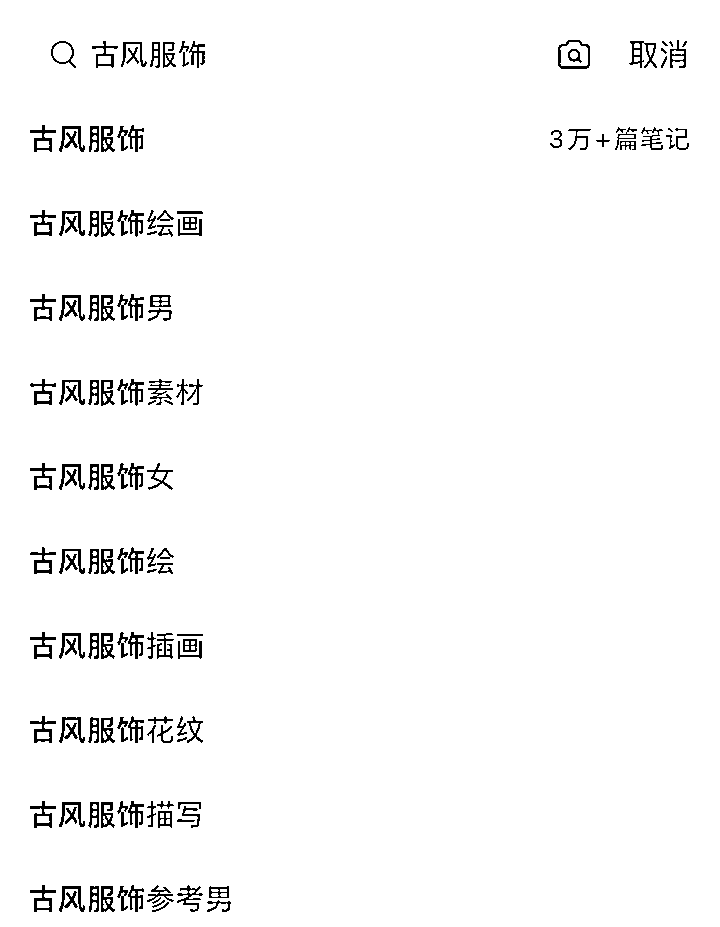
行业词10万左右是属于比较好的，有流量，有竞争但不激烈，如果自身有积累出圈也只需要时间而已。
比如干鱿鱼：
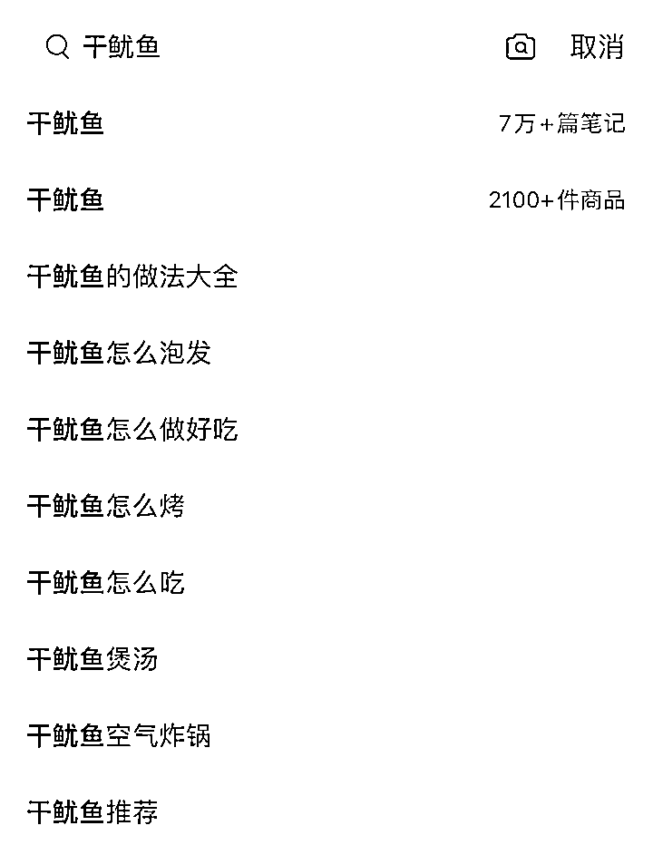
行业词大于50万是热门领域，流量大，竞争大，需要有团队或者极高的内容质量才有机会脱颖而出，当然做成大V之后回报也是巨大的。
比如民宿装修：
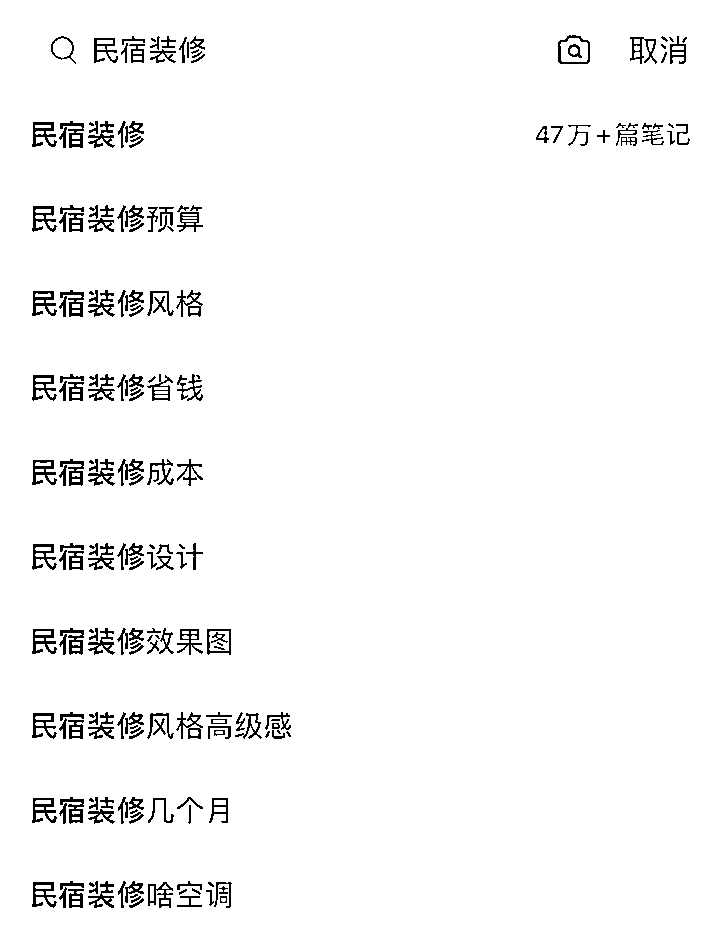
2、如何判断笔记是否值得投笔记
各行业都不同，按中位数来算10%是好的，值得投广告；5%是正常，1-3%该提升笔记质量了。
这个百分比怎么得出来的呢！我们发笔记都能看到小眼睛多少，用笔记点赞+收藏的总数除以小眼睛数*100得出互动率是多少。
比如下面的笔记数据
点赞64，小眼睛986，64/986*100=6.5%，互动率不算特别高，就没必要纠结了，可以直接去准备下一篇笔记。
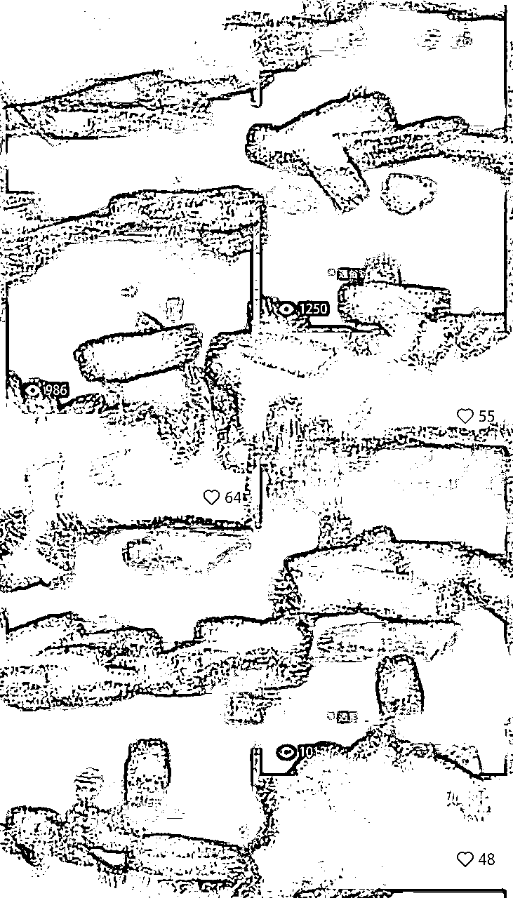
在看看下面这张图
点赞1266，小眼睛10851，1266/10851*100=11.7%。不算收藏都超过10%了，肯定是值得投薯条的。
算这个互动数据也是为了让你更清楚的看到用户喜欢看什么样的内容，根据用户喜好创作的作品数据明显不一样。
看下面的数据和上面的账号是同一个，他找到用户喜欢的样式创作的笔记，基本每篇都是爆款，互动都超过10%了。
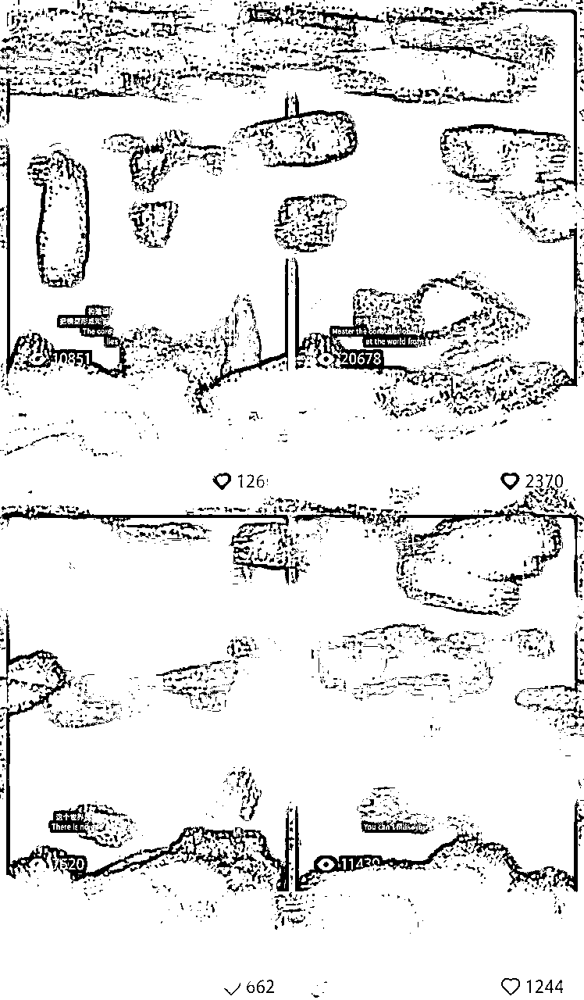
这篇文章主要写的是一个思路供大家参考，还有很多细节的问题我也不知道大家想听一些什么，可以评论区交流，有对小红书开店或者对这种长久的副业有兴趣的都可以聊聊。
好了，大概我想分享的就是这些， 另外在关于小红书运营建议还有一个比较重要的：
一定要多跟热点和官方活动，官方会有很多热门活动推出，跟自己行业有关的一定要跟，能扯上点关系的也建议跟上，这种都属于提高账号权重的快捷方式，通常流量倾斜都会非常明显。
开头我也说啦，发这篇文章是想交一些创业的朋友和寻求一些优质货源。
如果有朋友是做运动装备供应链的，或者你有知名品牌高让利的产品，比如李宁这种，可以找我谈谈合作，我在小红书帮你销售产品带货，你给我一些利润。
大概就说这么多，第一次在生财发帖子，也不知道大家喜欢看什么，有疑问的可以评论区交流。